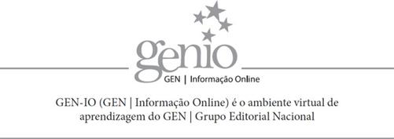

Este livro conta com o seguinte material suplementar:
Para docentes:
O acesso ao material suplementar é gratuito. Basta que o leitor se cadastre e faça seu login em nosso site (www.grupogen.com.br), clicando em GEN-IO, no menu superior do lado direito.
O acesso ao material suplementar online fica disponível até seis meses após a edição do livro ser retirada do mercado.
Caso haja alguma mudança no sistema ou dificuldade de acesso, entre em contato conosco (gendigital@grupogen.com.br).
